Building Automation
Industrial Automation
Power Automation & Safety


Bangladesh Distributor
Fiber Sensors
| Precautions for Safety Use |
| Precautions for Correct Use |
| Safety Precautions |
Related Contents
For precautions on individual products, refer to Safety Precautions in individual product information.
These Sensors cannot be used in safety devices for presses or other safety devices used to protect human life. These Sensors are designed for use in applications for sensing workpieces and workers that do not affect safety.
Precautions for Safe Use
To ensure safety, always observe the following precautions.
Wiring
| Item | Typical examples | |
| Power Supply Voltage Do not use a voltage in excess of the operating voltage range. Applying a voltage in excess of the operating voltage range, or applying AC power (100 VAC or greater) to a Sensor may cause explosion or burning. | DC Three-wire NPN Output Sensors 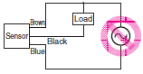 | --- |
| Load Short-circuiting Do not short-circuit the load. Doing so may cause explosion or burning. | DC Three-wire NPN Output Sensor 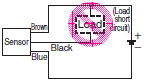 | --- |
| Incorrect Wiring Do not reverse the power supply polarity or otherwise wire incorrectly. Doing so may cause explosion or burning. | DC Three-wire NPN Output Sensors Example: Incorrect Polarity 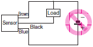 | DC Three-wire NPN Output Sensors Example: Incorrect Polarity Wiring 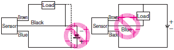 |
| Connection without a load If the power supply is connected directly without a load, the internal elements may burst or burn. Be sure to insert a load when connecting the power supply. | DC Three-wire NPN Output Sensors 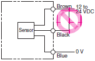 | --- |
Operating Environment
1.Do not use a Sensor in an environment where there are explosive or inflammable gases.
2.Do not use the Sensor in environments where the cables may become immersed in oil or other liquids or where liquids may penetrate the Sensor. Doing so may result in damage from burning and fire, particularly if the liquid is flammable.
Precautions for Correct Use
Design
Power Reset Time
The Sensor will be ready to detect within approximately 200 ms after the power is turned ON.
If the Sensor and the load are connected to separate power supplies, turn ON the Sensor power before turning ON the load power. Any exceptions to this rule are indicated in Safety Precautions in individual product information.
Turning OFF Power
An output pulse may be generated when the power is turned OFF. It is recommended that the load or load line power be turned OFF before the Sensor power is turned OFF.
Power Supply Types
An unsmoothed full-wave or half-wave rectifying power supply cannot be used.
Mutual Interference
Mutual interference is a state where an output is unstable because the Sensors are affected by light from the adjacent Sensors.
The following measures can be taken to avoid mutual interference.
| Counter- measure | Concept | Through-beam Sensors | Reflective Sensors |
| 1 | Use a Sensor with the interference prevention function. | If Fiber Amplifiers are mounted in close proximity, use Fiber Amplifiers with the interference prevention function. 10 or fewer Sensors: E3NX-FA, E3X-HD, and E3X-DA[]-S Fiber Amplifiers Performance, however, will depend on conditions. Refer to pages in individual model information. 9 (18-channel) or fewer Sensors: E3X-MDA Fiber Amplifier 5 or fewer Sensors: E3X-NA, E3X-SD Fiber Amplifiers | |
| 2 | Alternate Emitters and Receivers. | Close mounting of Sensors is possible by alternating the Emitters with the Receivers in a zigzag fashion (up to two Fiber Units). However, if the workpieces are close to the Fiber Units, light from the adjacent Emitter may be received and cause the Fiber Unit to change to the incident light state. 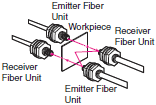 | --- |
| 3 | Offset the optical axes. | If there is a possibility that light from another Fiber Unit may enter the Receiver, change the position of the Emitter and Receiver, place a light barrier between the Sensors, or take other measures to prevent the light from entering the Receiver. (Light may enter even if the Sensors are separated by more than the sensing distance.) | If Fiber Units are mounted in opposite each other, slant the Fiber Units as shown in the following diagram. (This is because the Fiber Amplifiers may affect each other and cause output chattering even if separated by more than the Fiber Unit sensing distance.) 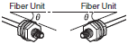 |
| 4 | Adjust the sensitivity. | Lowering the sensitivity will generally help. | |
Noise
Countermeasures for noise depend on the path of noise entry, frequency components, and wave heights. Typical measures are as given in the following table.
Wiring
Cable
Unless otherwise indicated, the maximum length of cable extension is 100 m using wire that is 0.3 mm2 or greater.
Exceptions are indicated in Safety Precautions in individual product information.
Bending the Cable
If you need to bend the cable, we recommend a bend radius that is at least 3 times the outer diameter of the cable. (For coaxial, shielded and robot cables, at least 5 times the outer diameter of the cable is recommended.)
The minimum bending radius applies to the inner radius of the cable when it is bent.
Cable Tensile Strength
When wiring the cable, do not subject the cable to a tension greater than that indicated in the following table.
| Cable diameter | Tensile strength |
| Less than 4 mm | 30 N max. |
| 4 mm or greater | 50 N max. |
Note:Do not subject a shielded cable or coaxial cable to tension.
Separation from High Voltage (Wiring Method)
Do not lay the cables for the Sensor together with high-voltage lines or power lines. Placing them in the same conduit or duct may cause damage or malfunction due to induction interference. As a general rule, wire the Sensor in a separate system, use an independent metal conduit, or use shielded cable.
Work Required for Unconnected Leads
Unused leads for self-diagnosis outputs or other special functions should be cut and wrapped with insulating tape to prevent contact with other terminals.
Power Supply
When using a commercially available switching regulator, ground the FG (frame ground) and G (ground) terminals.
If not grounded, switching noise in the power supply may cause malfunction.
Example of Connection with S3D2 Sensor Controller DC Three-wire NPN Output Sensors
Reverse operation is possible using the signal input switch on the S3D2.
Mounting
Attachment to Moving Parts
To mount the Photoelectric Sensor to a moving part, such as a robot hand, consider using a Sensors that uses a bending-resistant cable (robot cable).
Mounting Fiber Units
Use Fiber Cutter
Cut a thin fiber as follows.
For standard fibers, insert to the desired cutting position and cut.
| 1 | The fiber is shipped loosely tightened as shown in the figure at the right | 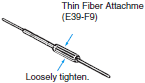 |
| 2 | Adjust the fiber to the desired length and fully tighten. | 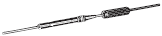 |
| 3 | Insert the Fiber Unit into E39-F4 and cut it. | 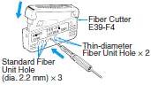 |
| 4 | Finished state. (Correctly cut end) | 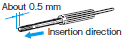 |
Mount Fiber Unit
1.Open the protective cover.
2.Raise the lock lever.
3.Insert the Fiber Unit in the fiber unit hole to the bottom.
4.Return the lock lever to the original position and fix the Fiber Unit.
Note:
1.When mounting a coaxial reflective Fiber Unit, insert the single-core Fiber Unit to the upper hole (Emitter side) and the multi-core Fiber Unit to the lower hole (Receiver side).
The cables for the Single-core Fiber Units (Emitters) have identification marks. Refer to the dimensions diagrams for details.
2.When removing the Fiber Unit, follow the above steps in reverse order. To maintain the characteristics of the Fiber Unit, make sure the lock is released before removing the Fiber Unit.
Securing Fiber Units
The Fiber Amplifier uses a one-touch locking mechanism.
Use the following methods to attach and remove Fiber Units.
1. Attaching Fiber Units
Open the protective cover, insert the Fiber Unit up to the insertion mark on the side of the Fiber Amplifier Unit, and then lower the lock lever.
Note:If one of the fibers from the Fiber Unit is labeled as the Emitter fiber, such as with a Coaxial Sensor, insert that fiber into the Emitter section. Refer to Dimensions for the Fiber Unit to see if there is an Emitter fiber label.
2. Removing Fiber Units
Open the protective cover, lift up the lock lever, and pull out the Fiber Unit.
Note:To maintain the Fiber Unit characteristics, make sure that the lock is released before removing the Fiber Unit.
Mounting the Fiber Amplifier Units
Mounting on DIN Track
1.Let the hook on the Amplifier Unit's Fiber Unit connection side catch the track and push the unit until it clicks.
Removing from DIN Track
1.Push the unit in the direction 1.
2.Lift it up in the direction 2.
Note:Refer to “I/O Circuit Diagrams” or check the side of the unit for wire color and role indications.
Mounting Amplifier Units in Group(Wire-saving Connector Type Models)
1.Mount the Fiber Amplifier units one at a time onto the DIN track and push them until they click.
2.Slide the Fiber Amplifier units in the direction 2.
3.Use End Plates (PFP-M: separately sold) at the both ends of the grouped Fiber Amplifier units to prevent them from separating due to vibration or other cause.
4.Tighten the screw on the End Plates using a driver.
Note:Under environments such as vibration, use an end plates even with a single Fiber Amplifier Unit.
Tightening Force
Refer to the Fiber Sensor Best Selection Catalog (Cat. No. E418-E1) for the tightening torque to apply when mounting a Fiber Unit.
Threaded Models
Cylindrical Models
Chemical and Oil-resistant Models
The following method is recommended for mounting Fiber Units with fluororesin-covered sensing heads (E32-T[]F and E32-D[]F) to prevent from cracking the fluororesin case. If you use a set screw to secure the Fiber Unit, tighten it with care to prevent from cracking the case.
Connections
Do not subject the Fiber Unit to excessive force, such as tension or compression.
Refer to the Fiber Sensor Best Selection Catalog (Cat. No. E418-E1) for tensile strengths.
Make sure any bend in the Fiber Unit is larger than the allowable bending radius.
Refer to the Fiber Sensor Best Selection Catalog (Cat. No. E418-E1) for bending radius ratings and length of unbendable sections at the base of the Fiber Unit.
Do not compress or place heavy loads on the fibers.
The method shown below is an ef fective way to prevent the Fiber Unit from breaking due to vibration.
Sleeve Bender (E39-F11)
The bending radius of the stainless steel tube should be as large as possible. The smaller the bending radius is, the shorter the sensing distance will be.
Insert the tip of the stainless steel tube in the Sleeve Bender and slowly bend the tube along the curve of the Sleeve Bender.
Heat-resistant Fiber Units (E32-D51(R) and E32-T51(R))
The fibers of these Units cannot be extended using the E39-F10 Fiber Connector.
E32-T14
These Units may enter the light-ON state if there are reflective objects at the end of the lenses.
If reflection is a problem, attach the black stickers provided to the ends of the lenses.
E32-T16PR
To use the provided slit, peel off the backing sheet, align the slit with the edges of the sensing surface, and attach it to the sensing head.
Use the slit in applications where saturation occurs (i.e., changes in incident level cannot be detected) due to short sensing distances.
Vacuum-resistant Fiber Units (E32-[]V)
Although the Flanges, the Fiber Units on the vacuum side, and the Lens Units have been cleaned, as an extra precaution, clean these with alcohol before using them in high-vacuum environments to ensure that they are properly degreased.
Liquid-level Detection Fiber Unit (E32-D82F1)
Secure the Fiber Unit using the unbendable section. Otherwise, the liquid-level detection position may be displaced.
For applications in hazardous environments, install the Fiber Unit in the hazardous environment but install the Amplifier Unit in a safe environment.
Liquid-level Detection Fiber Units (Tube-mounting Models)
Make sure that the tube is not deformed when using a band to secure the Fiber Unit.
Adjustments
Optical Axis Adjustment
Move the Fiber Unit both vertically and horizontally and set it in the center of the range in which the operation indicator is lit or not lit.
Optical axis:
The optical axis for the Emitter Fiber Unit is a line joining the center of the sensing surface to the center of the emission beam. The optical axis for the Receiver Fiber Unit is a line joining the center of the sensing surface to the center of the reception area.
Detection Position for Liquid-level Detection Fiber Unit (E32-D82F1)
The liquid-level detection position is 5.2 ±2 mm from the end of the fluororesin section. (Refer to the diagram on the right.) The liquid-level detection position varies with the surface tension of the liquid and the degree of wetness at the Fiber Unit’s detection position.
Operating Environment
Water Resistance
Do not use in water, in rain, or outside.
Ambient Conditions
Do not use this Sensor in the following locations. Otherwise, it may malfunction or fail.
1.Locations exposed to excessive dust and dirt
2.Locations exposed to direct sunlight
3.Locations with corrosive gas vapors
4.Locations where organic solvents may splash onto the Sensor
5.Locations subject to vibration or shock
6.Locations where there is a possibility of direct contact with water, oil, or chemicals
7.Locations with high humidity and where condensation may result
At low temperatures (0°C or less), the vinyl cable will harden and the wires may break if the cable is bent. Do not bend a Standard or Robot Cable at low temperature
Chemical-resistant, Oil-resistant Fiber Units
The E32-T11F/T12F/T14F/D12F and D82F can be used in locations 3. and 6. above.
Optical Fiber Photoelectric Sensors in Explosive Gas Atmospheres
The Fiber Unit can be installed in the hazardous area, and the Amplifier Unit can be installed in a non-hazardous area.
Reason
For explosion or fire due to electrical equipment to occur, both the hazardous atmosphere and a source of ignition must be in the same location. Optical energy does not act as an ignition source, thus there is no danger of explosion or fire.
The case and fiber covering are made of plastic, so this setup cannot be used if there is a possibility of contact with solvents that will corrode or degrade (e.g., cloud) the plastic.
Ignition Source
Electrical sparks or high-temperature parts that have sufficient energy to cause explosion in a hazardous atmosphere are called ignition sources.
Influence from External Electrical Fields
Do not bring a transceiver near the Fiber Sensor or its wiring, because this may cause incorrect operation.
Maintenance and Inspection
Points to Check When the Sensor Does Not Operate
If the Sensor does not operate, check the following points.
1.Are the wiring and connections correct?
2.Are any of the mounting screws loose?
3.Are the optical axis and sensitivity adjusted correctly?
4.Do the sensing object and the workpiece speed satisfy the ratings and specifications?
5.Are any foreign objects, such as debris or dust, adhering to the sensing surface?
6.Is strong light, such as sunlight (e.g., reflected from a wall), shining on the Receiver?
7.Do not attempt to disassemble or repair the Sensor under any circumstances.
8.If you determine that the Sensor clearly has a failure, immediately turn OFF the power supply.
Sensing Surface, Case, and Other Plastic Parts
Dirt on the plastic parts should be gently wiped off with a dry cloth. Do not use thinner or other organic solvents.
Accessories
Using a Reflector (E39-R3/RP37) During Application
1.When using adhesive tape on the rear face, apply it after washing away oil and dust with detergent. The Reflector cannot be mounted if there is any oil or dirt remaining.
2.Do not press on the E39-RP37 with metal or a fingernail. This may weaken performance.
3.This Sensor cannot be used in locations where oil or chemicals may splash on the Sensor.
Use of E39-R3 Reflector Provided with E32-R21
1.Use detergent to remove any dust or oil from the surfaces where tape is applied. Adhesive tape will not be attached properly if oil or dust remains on the surface.
2.The E39-R3 cannot be used in areas that are exposed to oil or chemicals.
Mounting method of Protective Spiral Tubes
1.Insert the Fiber Unit into the Protective Spiral Tube from the head connector (threaded).
2.Push the fiber into the Protective Spiral Tube. The tube must be straight so that the fiber enters without twisting.
Turn the Protective Spiral Tube, not the fiber.
3.Secure the Protective Spiral Tube to the mounting panel with the provided nuts.
4.Use the provided saddle to secure the end cap of the Protective Spiral Tube. (To secure the Protective Spiral Tube at a position other than the end cap, apply tape to the tube so that the portion becomes thicker in diameter.)
Attaching the E39-F10 Fiber Connector
Attach the Fiber Connecter as shown in the following figures.
1.Insert the Fiber Unit in the retention clip.
2.Insert the retention clip into the splice.
The Fiber Units should be as close as possible when they are connected.
The sensing distance is reduced by approximately 25% when Fiber Units are extended by the connector.
Only 2.2-mm-diameter fibers can be connected.
Others
Cleaning
Keep organic solvents away from the Sensor. Organic solvents will dissolve the surface.
Use a soft, dry cloth to clean the Sensor.
Liquid-level Detection Fiber Unit (E32-D82F1)
Operation may become unstable in the following cases:
1.Bubbles stick to the cone of the sensing head.
2.Solute deposits on the cone of the sensing head.
3.The liquid has a high viscosity.
There are some liquids, such as milky white liquids, for which detection is not possible.
Do not let the end of the fluororesin section bump into other objects.
Damage to or deformation of the sensing head may cause unstable operation.
The product shall be used in the following conditions.
Ambient pressure: -50 to +500 kPa
To use one-point teach mode (without object)
Please carry out teaching where the detecting head is sunk into liquid. The sensitivity is set to 10% upper to the incident level in the liquid. This setting method is effective in high degree of viscosity, because it becomes stable to the fluctuation of incident level when the liquid drops from the tip.
To use two-point teach mode (with/without object)
Please teach where the detecting head is pulled up from liquid and next teach where it is sunk into liquid. This setting method is effective to a liquid which is easy to bubble at high temperature.
Don't use maximum sensitivity mode because a liquid may be undetectable.
Chemical and Oil-resistant, Liquid-level Detection Fiber Unit (E32-D82F1)
Fluororesin shows strong chemical-resistant properties but is permeable if exposed to atmospheres with gaseous chemicals or water vapors, resulting in failure or damage. Confirm applicability sufficiently before using the Fiber Unit in these environments.